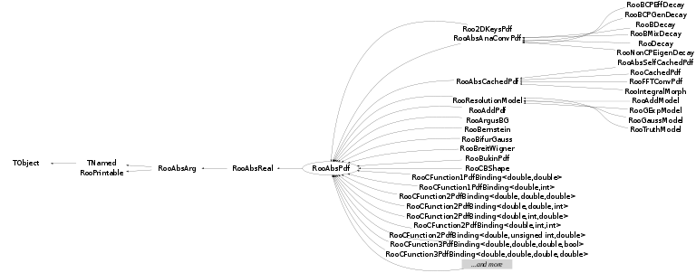

class RooAbsPdf: public RooAbsReal
RooAbsPdf is the abstract interface for all probability density functions The class provides hybrid analytical/numerical normalization for its implementations, error tracing and a MC generator interface. A minimal implementation of a PDF class derived from RooAbsPdf should overload the evaluate() function. This functions should return PDFs value. [Normalization/Integration] Although the normalization of a PDF is an integral part of a probability density function, normalization is treated separately in RooAbsPdf. The reason is that a RooAbsPdf object is more than a PDF: it can be a building block for a more complex, composite PDF if any of its variables are functions instead of variables. In such cases the normalization of the composite may not be simply the integral over the dependents of the top level PDF as these are functions with potentially non-trivial Jacobian terms themselves. Therefore --> No explicit attempt should be made to normalize the functions output in evaluate(). In addition, RooAbsPdf objects do not have a static concept of what variables are parameters and what variables are dependents (which need to be integrated over for a correct PDF normalization). Instead the choice of normalization is always specified each time a normalized values is requested from the PDF via the getVal() method. RooAbsPdf manages the entire normalization logic of each PDF with help of a RooRealIntegral object, which coordinates the integration of a given choice of normalization. By default, RooRealIntegral will perform a fully numeric integration of all dependents. However, PDFs can advertise one or more (partial) analytical integrals of their function, and these will be used by RooRealIntegral, if it determines that this is safe (i.e. no hidden Jacobian terms, multiplication with other PDFs that have one or more dependents in commen etc) To implement analytical integrals, two functions must be implemented. First, Int_t getAnalyticalIntegral(const RooArgSet& integSet, RooArgSet& anaIntSet) advertises the analytical integrals that are supported. 'integSet' is the set of dependents for which integration is requested. The function should copy the subset of dependents it can analytically integrate to anaIntSet and return a unique identification code for this integration configuration. If no integration can be performed, zero should be returned. Second, Double_t analyticalIntegral(Int_t code) Implements the actual analytical integral(s) advertised by getAnalyticalIntegral. This functions will only be called with codes returned by getAnalyticalIntegral, except code zero. The integration range for real each dependent to be integrated can be obtained from the dependents' proxy functions min() and max(). Never call these proxy functions for any proxy not known to be a dependent via the integration code. Doing so may be ill-defined, e.g. in case the proxy holds a function, and will trigger an assert. Integrated category dependents should always be summed over all of their states. [Direct generation of observables] Any PDF dependent can be generated with the accept/reject method, but for certain PDFs more efficient methods may be implemented. To implement direct generation of one or more observables, two functions need to be implemented, similar to those for analytical integrals: Int_t getGenerator(const RooArgSet& generateVars, RooArgSet& directVars) and void generateEvent(Int_t code) The first function advertises observables that can be generated, similar to the way analytical integrals are advertised. The second function implements the generator for the advertised observables The generated dependent values should be store in the proxy objects. For this the assignment operator can be used (i.e. xProxy = 3.0 ). Never call assign to any proxy not known to be a dependent via the generation code. Doing so may be ill-defined, e.g. in case the proxy holds a function, and will trigger an assert
Function Members (Methods)
This is an abstract class, constructors will not be documented.
Look at the header to check for available constructors.
public:
protected:
Data Members
public:
| enum ExtendMode { | CanNotBeExtended | |
| CanBeExtended | ||
| MustBeExtended | ||
| }; | ||
| enum RooAbsReal::ScaleType { | Raw | |
| Relative | ||
| NumEvent | ||
| RelativeExpected | ||
| }; | ||
| enum RooAbsReal::ErrorLoggingMode { | PrintErrors | |
| CollectErrors | ||
| CountErrors | ||
| Ignore | ||
| }; | ||
| enum RooAbsArg::ConstOpCode { | Activate | |
| DeActivate | ||
| ConfigChange | ||
| ValueChange | ||
| }; | ||
| enum RooAbsArg::OperMode { | Auto | |
| AClean | ||
| ADirty | ||
| }; | ||
| enum TObject::EStatusBits { | kCanDelete | |
| kMustCleanup | ||
| kObjInCanvas | ||
| kIsReferenced | ||
| kHasUUID | ||
| kCannotPick | ||
| kNoContextMenu | ||
| kInvalidObject | ||
| }; | ||
| enum TObject::[unnamed] { | kIsOnHeap | |
| kNotDeleted | ||
| kZombie | ||
| kBitMask | ||
| kSingleKey | ||
| kOverwrite | ||
| kWriteDelete | ||
| }; | ||
| enum RooPrintable::ContentsOption { | kName | |
| kClassName | ||
| kValue | ||
| kArgs | ||
| kExtras | ||
| kAddress | ||
| kTitle | ||
| kCollectionHeader | ||
| }; | ||
| enum RooPrintable::StyleOption { | kInline | |
| kSingleLine | ||
| kStandard | ||
| kVerbose | ||
| kTreeStructure | ||
| }; |
protected:
| set<std::string> | RooAbsArg::_boolAttrib | Boolean attributes |
| set<std::string> | RooAbsArg::_boolAttribTransient | ! Transient boolean attributes (not copied in ctor) |
| UChar_t | RooAbsReal::_byteValue | ! Transient cache for byte values from tree branches |
| static Bool_t | RooAbsReal::_cacheCheck | If true, always validate contents of clean which outcome of evaluate() |
| deque<RooAbsCache*> | RooAbsArg::_cacheList | list of caches |
| RooRefCountList | RooAbsArg::_clientList | list of client objects |
| RooRefCountList | RooAbsArg::_clientListShape | subset of clients that requested shape dirty flag propagation |
| RooRefCountList | RooAbsArg::_clientListValue | subset of clients that requested value dirty flag propagation |
| TIterator* | RooAbsArg::_clientShapeIter | ! Iterator over _clientListShape |
| TIterator* | RooAbsArg::_clientValueIter | ! Iterator over _clientListValue |
| Bool_t | RooAbsArg::_deleteWatch | ! Delete watch flag |
| RooExpensiveObjectCache* | RooAbsArg::_eocache | Pointer to global cache manager for any expensive components created by this object |
| Int_t | _errorCount | Number of errors remaining to print |
| static Bool_t | _evalError | |
| Bool_t | RooAbsArg::_fast | Allow fast access mode in getVal() and proxies |
| Float_t | RooAbsReal::_floatValue | ! Transient cache for floating point values from tree branches |
| Bool_t | RooAbsReal::_forceNumInt | Force numerical integration if flag set |
| static Bool_t | RooAbsReal::_globalSelectComp | Global activation switch for component selection |
| static Bool_t | RooAbsArg::_inhibitDirty | Static flag controlling global inhibit of dirty state propagation |
| Int_t | RooAbsReal::_intValue | ! Transient cache for integer values from tree branches |
| TString | RooAbsReal::_label | Plot label for objects value |
| RooArgSet* | RooAbsReal::_lastNSet | ! |
| Int_t | _minDimNormValueCache | Minimum number of numerically integrated dimensions to activate normalization value caching |
| static Int_t | RooPrintable::_nameLength | |
| TNamed* | RooAbsArg::_namePtr | ! Do not persist. Pointer to global instance of string that matches object named |
| Int_t | _negCount | Number of negative probablities remaining to print |
| RooAbsReal* | _norm | ! Normalization integral (owned by _normMgr) |
| RooObjCacheManager | _normMgr | The cache manager |
| TString | _normRange | Normalization range |
| static TString | _normRangeOverride | |
| RooArgSet* | _normSet | ! Normalization set with for above integral |
| RooAbsArg::OperMode | RooAbsArg::_operMode | Dirty state propagation mode |
| RooArgSet* | RooAbsArg::_ownedComponents | ! Set of owned component |
| Int_t | RooAbsReal::_plotBins | Number of plot bins |
| Double_t | RooAbsReal::_plotMax | Maximum of plot range |
| Double_t | RooAbsReal::_plotMin | Minimum of plot range |
| Bool_t | RooAbsArg::_prohibitServerRedirect | ! Prohibit server redirects -- Debugging tool |
| TRefArray | RooAbsArg::_proxyList | list of proxies |
| Double_t | _rawValue | |
| Char_t | RooAbsReal::_sbyteValue | ! Transient cache for signed byte values from tree branches |
| Bool_t | _selectComp | Component selection flag for RooAbsPdf::plotCompOn |
| Bool_t | RooAbsReal::_selectComp | ! Component selection flag for RooAbsPdf::plotCompOn |
| RooRefCountList | RooAbsArg::_serverList | list of server objects |
| Bool_t | RooAbsArg::_shapeDirty | Flag set if value needs recalculating because input shapes modified |
| RooNumGenConfig* | _specGeneratorConfig | ! MC generator configuration specific for this object |
| RooNumIntConfig* | RooAbsReal::_specIntegratorConfig | Numeric integrator configuration specific for this object |
| map<std::string,std::string> | RooAbsArg::_stringAttrib | String attributes |
| Int_t | _traceCount | Number of traces remaining to print |
| Bool_t | RooAbsReal::_treeVar | !do not persist |
| UInt_t | RooAbsReal::_uintValue | ! Transient cache for unsigned integer values from tree branches |
| TString | RooAbsReal::_unit | Unit for objects value |
| Double_t | RooAbsReal::_value | Cache for current value of object |
| Int_t | _valueCacheIntOrder | Interpolation order for numeric integral value cache |
| Bool_t | RooAbsArg::_valueDirty | Flag set if value needs recalculating because input values modified |
| static Bool_t | RooAbsArg::_verboseDirty | Static flag controlling verbose messaging for dirty state changes |
| static Int_t | _verboseEval | |
| TString | TNamed::fName | object identifier |
| TString | TNamed::fTitle | object title |
Class Charts
{kind=link}
{kind=link}
{kind=link}
{kind=link}

Function documentation
Double_t getValV(const RooArgSet* set = 0) const
Return current value, normalizated by integrating over the observables in 'nset'. If 'nset' is 0, the unnormalized value. is returned. All elements of 'nset' must be lvalues Unnormalized values are not cached Doing so would be complicated as _norm->getVal() could spoil the cache and interfere with returning the cached return value. Since unnormalized calls are typically done in integration calls, there is no performance hit.
Double_t analyticalIntegralWN(Int_t code, const RooArgSet* normSet, const char* rangeName = 0) const
Analytical integral with normalization (see RooAbsReal::analyticalIntegralWN() for further information) This function applies the normalization specified by 'normSet' to the integral returned by RooAbsReal::analyticalIntegral(). The passthrough scenario (code=0) is also changed to return a normalized answer
Bool_t traceEvalPdf(Double_t value) const
Check that passed value is positive and not 'not-a-number'. If not, print an error, until the error counter reaches its set maximum.
Double_t getNorm(const RooArgSet* set = 0) const
Return the integral of this PDF over all observables listed in 'nset'.
const RooAbsReal* getNormObj(const RooArgSet* set, const RooArgSet* iset, const TNamed* rangeName = 0) const
Return pointer to RooAbsReal object that implements calculation of integral over observables iset in range rangeName, optionally taking the integrand normalized over observables nset
Bool_t syncNormalization(const RooArgSet* dset, Bool_t adjustProxies = kTRUE) const
Verify that the normalization integral cached with this PDF is valid for given set of normalization observables If not, the cached normalization integral (if any) is deleted and a new integral is constructed for use with 'nset' Elements in 'nset' can be discrete and real, but must be lvalues For functions that declare to be self-normalized by overloading the selfNormalized() function, a unit normalization is always constructed
void setNormValueCaching(Int_t minNumIntDim, Int_t ipOrder = 2)
Activate caching of normalization integral values in a interpolated histogram for integrals that exceed the specified minimum number of numerically integrated dimensions, _and_ of which the integral has at most 2 parameters. The cache is scanned with a granularity defined by a binning named "cache" in the scanned integral parameters and is interpolated to given order. The cache values are kept for the livetime of the ROOT session/application and are persisted along with the object in case the p.d.f. is persisted in a RooWorkspace This feature can substantially speed up fits and improve convergence with slow multi-dimensional integrals whose value varies slowly with the parameters so that the an interpolated histogram is a good approximation of the true integral value. The improved convergence behavior is a result of making the value of the normalization integral deterministic for each value of the parameters. If (multi-dimensional) numeric integrals are calculated at insufficient precision (>=1e-7) MINUIT convergence may be impaired by the effects numerical noise that can cause that subsequent evaluations of an integral at the same point in parameter space can give slightly different answers.
void resetErrorCounters(Int_t resetValue = 10)
Reset error counter to given value, limiting the number of future error messages for this pdf to 'resetValue'
void setTraceCounter(Int_t value, Bool_t allNodes = kFALSE)
Reset trace counter to given value, limiting the number of future trace messages for this pdf to 'value'
Double_t getLogVal(const RooArgSet* set = 0) const
Return the log of the current value with given normalization An error message is printed if the argument of the log is negative.
Double_t extendedTerm(Double_t observedEvents, const RooArgSet* nset = 0) const
Returned the extended likelihood term (Nexpect - Nobserved*log(NExpected) of this PDF for the given number of observed events For successfull operation the PDF implementation must indicate it is extendable by overloading canBeExtended() and must implemented the expectedEvents() function.
RooAbsReal* createNLL(RooAbsData& data, const RooCmdArg& arg1 = RooCmdArg::none(), const RooCmdArg& arg2 = RooCmdArg::none(), const RooCmdArg& arg3 = RooCmdArg::none(), const RooCmdArg& arg4 = RooCmdArg::none(), const RooCmdArg& arg5 = RooCmdArg::none(), const RooCmdArg& arg6 = RooCmdArg::none(), const RooCmdArg& arg7 = RooCmdArg::none(), const RooCmdArg& arg8 = RooCmdArg::none())
Construct representation of -log(L) of PDFwith given dataset. If dataset is unbinned, an unbinned likelihood is constructed. If the dataset is binned, a binned likelihood is constructed. The following named arguments are supported ConditionalObservables(const RooArgSet& set) -- Do not normalize PDF over listed observables Extended(Bool_t flag) -- Add extended likelihood term, off by default Range(const char* name) -- Fit only data inside range with given name Range(Double_t lo, Double_t hi) -- Fit only data inside given range. A range named "fit" is created on the fly on all observables. Multiple comma separated range names can be specified. SumCoefRange(const char* name) -- Set the range in which to interpret the coefficients of RooAddPdf components NumCPU(int num) -- Parallelize NLL calculation on num CPUs Optimize(Bool_t flag) -- Activate constant term optimization (on by default) SplitRange(Bool_t flag) -- Use separate fit ranges in a simultaneous fit. Actual range name for each subsample is assumed to by rangeName_{indexState} where indexState is the state of the master index category of the simultaneous fit Constrain(const RooArgSet&pars) -- For p.d.f.s that contain internal parameter constraint terms, only apply constraints to given subset of parameters ExternalConstraints(const RooArgSet& ) -- Include given external constraints to likelihood Verbose(Bool_t flag) -- Constrols RooFit informational messages in likelihood construction CloneData(Bool flag) -- Use clone of dataset in NLL (default is true)
RooAbsReal* createNLL(RooAbsData& data, const RooLinkedList& cmdList)
Construct representation of -log(L) of PDFwith given dataset. If dataset is unbinned, an unbinned likelihood is constructed. If the dataset is binned, a binned likelihood is constructed. See RooAbsPdf::createNLL(RooAbsData& data, RooCmdArg arg1, RooCmdArg arg2, RooCmdArg arg3, RooCmdArg arg4, RooCmdArg arg5, RooCmdArg arg6, RooCmdArg arg7, RooCmdArg arg8) for documentation of options
RooFitResult* fitTo(RooAbsData& data, const RooCmdArg& arg1 = RooCmdArg::none(), const RooCmdArg& arg2 = RooCmdArg::none(), const RooCmdArg& arg3 = RooCmdArg::none(), const RooCmdArg& arg4 = RooCmdArg::none(), const RooCmdArg& arg5 = RooCmdArg::none(), const RooCmdArg& arg6 = RooCmdArg::none(), const RooCmdArg& arg7 = RooCmdArg::none(), const RooCmdArg& arg8 = RooCmdArg::none())
Fit PDF to given dataset. If dataset is unbinned, an unbinned maximum likelihood is performed. If the dataset is binned, a binned maximum likelihood is performed. By default the fit is executed through the MINUIT commands MIGRAD, HESSE and MINOS in succession. The following named arguments are supported Options to control construction of -log(L) ConditionalObservables(const RooArgSet& set) -- Do not normalize PDF over listed observables Extended(Bool_t flag) -- Add extended likelihood term, off by default Range(const char* name) -- Fit only data inside range with given name Range(Double_t lo, Double_t hi) -- Fit only data inside given range. A range named "fit" is created on the fly on all observables. Multiple comma separated range names can be specified. SumCoefRange(const char* name) -- Set the range in which to interpret the coefficients of RooAddPdf components NumCPU(int num) -- Parallelize NLL calculation on num CPUs SplitRange(Bool_t flag) -- Use separate fit ranges in a simultaneous fit. Actual range name for each subsample is assumed to by rangeName_{indexState} where indexState is the state of the master index category of the simultaneous fit Constrained() -- Apply all constrained contained in the p.d.f. in the likelihood Contrain(const RooArgSet&pars) -- Apply constraints to listed parameters in likelihood using internal constrains in p.d.f ExternalConstraints(const RooArgSet& ) -- Include given external constraints to likelihood Options to control flow of fit procedure Minimizer(type,algo) -- Choose minimization package and algorithm to use. Default is MINUIT/MIGRAD through the RooMinimizer interface, but others can be specified (through RooMinimizer interface). Select OldMinuit to use MINUIT through the old RooMinuit interface Type Algorithm ------ --------- OldMinuit migrad, simplex, minimize (=migrad+simplex), migradimproved (=migrad+improve) Minuit migrad, simplex, minimize (=migrad+simplex), migradimproved (=migrad+improve) Minuit2 migrad, simplex, minimize, scan GSLMultiMin conjugatefr, conjugatepr, bfgs, bfgs2, steepestdescent GSLSimAn - InitialHesse(Bool_t flag) -- Flag controls if HESSE before MIGRAD as well, off by default Optimize(Bool_t flag) -- Activate constant term optimization of test statistic during minimization (on by default) Hesse(Bool_t flag) -- Flag controls if HESSE is run after MIGRAD, on by default Minos(Bool_t flag) -- Flag controls if MINOS is run after HESSE, on by default Minos(const RooArgSet& set) -- Only run MINOS on given subset of arguments Save(Bool_t flag) -- Flac controls if RooFitResult object is produced and returned, off by default Strategy(Int_t flag) -- Set Minuit strategy (0 through 2, default is 1) FitOptions(const char* optStr) -- Steer fit with classic options string (for backward compatibility). Use of this option excludes use of any of the new style steering options. SumW2Error(Bool_t flag) -- Apply correaction to errors and covariance matrix using sum-of-weights covariance matrix to obtain correct error for weighted likelihood fits. If this option is activated the corrected covariance matrix is calculated as Vcorr = V C-1 V, where V is the original covariance matrix and C is the inverse of the covariance matrix calculated using the weights squared Options to control informational output Verbose(Bool_t flag) -- Flag controls if verbose output is printed (NLL, parameter changes during fit Timer(Bool_t flag) -- Time CPU and wall clock consumption of fit steps, off by default PrintLevel(Int_t level) -- Set Minuit print level (-1 through 3, default is 1). At -1 all RooFit informational messages are suppressed as well Warnings(Bool_t flag) -- Enable or disable MINUIT warnings (enabled by default) PrintEvalErrors(Int_t numErr) -- Control number of p.d.f evaluation errors printed per likelihood evaluation. A negative value suppress output completely, a zero value will only print the error count per p.d.f component, a positive value is will print details of each error up to numErr messages per p.d.f component.
RooFitResult* fitTo(RooAbsData& data, const RooLinkedList& cmdList)
Fit PDF to given dataset. If dataset is unbinned, an unbinned maximum likelihood is performed. If the dataset is binned, a binned maximum likelihood is performed. By default the fit is executed through the MINUIT commands MIGRAD, HESSE and MINOS in succession. See RooAbsPdf::fitTo(RooAbsData& data, RooCmdArg arg1, RooCmdArg arg2, RooCmdArg arg3, RooCmdArg arg4, RooCmdArg arg5, RooCmdArg arg6, RooCmdArg arg7, RooCmdArg arg8) for documentation of options
RooFitResult* chi2FitTo(RooDataHist& data, const RooLinkedList& cmdList)
Internal back-end function to steer chi2 fits
RooAbsReal* createChi2(RooDataHist& data, const RooCmdArg& arg1 = RooCmdArg::none(), const RooCmdArg& arg2 = RooCmdArg::none(), const RooCmdArg& arg3 = RooCmdArg::none(), const RooCmdArg& arg4 = RooCmdArg::none(), const RooCmdArg& arg5 = RooCmdArg::none(), const RooCmdArg& arg6 = RooCmdArg::none(), const RooCmdArg& arg7 = RooCmdArg::none(), const RooCmdArg& arg8 = RooCmdArg::none())
Create a chi-2 from a histogram and this function. The following named arguments are supported Options to control construction of the chi^2 Extended() -- Use expected number of events of an extended p.d.f as normalization DataError() -- Choose between Poisson errors and Sum-of-weights errors NumCPU() -- Activate parallel processing feature Range() -- Fit only selected region SumCoefRange() -- Set the range in which to interpret the coefficients of RooAddPdf components SplitRange() -- Fit range is split by index catory of simultaneous PDF ConditionalObservables() -- Define projected observables
RooAbsReal* createChi2(RooDataSet& data, const RooLinkedList& cmdList)
Internal back-end function to create a chi^2 from a p.d.f. and a dataset
void printValue(ostream& os) const
Print value of p.d.f, also print normalization integral that was last used, if any
void printMultiline(ostream& os, Int_t contents, Bool_t verbose = kFALSE, TString indent = "") const
RooAbsGenContext* binnedGenContext(const RooArgSet& vars, Bool_t verbose = kFALSE) const
Return a binned generator context
RooAbsGenContext* genContext(const RooArgSet& vars, const RooDataSet* prototype = 0, const RooArgSet* auxProto = 0, Bool_t verbose = kFALSE) const
Interface function to create a generator context from a p.d.f. This default implementation returns a 'standard' context that works for any p.d.f
RooAbsGenContext* autoGenContext(const RooArgSet& vars, const RooDataSet* prototype = 0, const RooArgSet* auxProto = 0, Bool_t verbose = kFALSE, Bool_t autoBinned = kTRUE, const char* binnedTag = "") const
RooDataSet * generate(const RooArgSet& whatVars, Int_t nEvents, const RooCmdArg& arg1, const RooCmdArg& arg2 = RooCmdArg::none(), const RooCmdArg& arg3 = RooCmdArg::none(), const RooCmdArg& arg4 = RooCmdArg::none(), const RooCmdArg& arg5 = RooCmdArg::none())
Generate a new dataset containing the specified variables with events sampled from our distribution. Generate the specified number of events or expectedEvents() if not specified. Any variables of this PDF that are not in whatVars will use their current values and be treated as fixed parameters. Returns zero in case of an error. The caller takes ownership of the returned dataset. The following named arguments are supported Name(const char* name) -- Name of the output dataset Verbose(Bool_t flag) -- Print informational messages during event generation Extended() -- The actual number of events generated will be sampled from a Poisson distribution with mu=nevt. For use with extended maximum likelihood fits AutoBinned(Bool_t flag) -- Automatically deploy binned generation for binned distributions (e.g. RooHistPdf, sums and products of RooHistPdfs etc) NB: Datasets that are generated in binned mode are returned as weighted unbinned datasets GenBinned(const char* tag) -- Use binned generation for all component pdfs that have 'setAttribute(tag)' set AllBinned() -- As above, but for all components. Note that the notion of components is only meaningful for simultaneous pdf as binned generation is always executed at the top-level node for a regular pdf, so for those it only mattes that the top-level node is tagged. ProtoData(const RooDataSet& data, -- Use specified dataset as prototype dataset. If randOrder is set to true Bool_t randOrder) the order of the events in the dataset will be read in a random order if the requested number of events to be generated does not match the number of events in the prototype dataset If ProtoData() is used, the specified existing dataset as a prototype: the new dataset will contain the same number of events as the prototype (unless otherwise specified), and any prototype variables not in whatVars will be copied into the new dataset for each generated event and also used to set our PDF parameters. The user can specify a number of events to generate that will override the default. The result is a copy of the prototype dataset with only variables in whatVars randomized. Variables in whatVars that are not in the prototype will be added as new columns to the generated dataset.
RooDataSet * generate(const RooArgSet& whatVars, const RooCmdArg& arg1 = RooCmdArg::none(), const RooCmdArg& arg2 = RooCmdArg::none(), const RooCmdArg& arg3 = RooCmdArg::none(), const RooCmdArg& arg4 = RooCmdArg::none(), const RooCmdArg& arg5 = RooCmdArg::none(), const RooCmdArg& arg6 = RooCmdArg::none())
Generate a new dataset containing the specified variables with events sampled from our distribution. Generate the specified number of events or expectedEvents() if not specified. Any variables of this PDF that are not in whatVars will use their current values and be treated as fixed parameters. Returns zero in case of an error. The caller takes ownership of the returned dataset. The following named arguments are supported Name(const char* name) -- Name of the output dataset Verbose(Bool_t flag) -- Print informational messages during event generation NumEvent(int nevt) -- Generate specified number of events AutoBinned(Bool_t flag) -- Automatically deploy binned generation for binned distributions (e.g. RooHistPdf, sums and products of RooHistPdfs etc) NB: Datasets that are generated in binned mode are returned as weighted unbinned datasets GenBinned(const char* tag) -- Use binned generation for all component pdfs that have 'setAttribute(tag)' set AllBinned() -- As above, but for all components. Note that the notion of components is only meaningful for simultaneous pdf as binned generation is always executed at the top-level node for a regular pdf, so for those it only mattes that the top-level node is tagged. Binned generation cannot be used when prototype data is supplied Extended() -- The actual number of events generated will be sampled from a Poisson distribution with mu=nevt. For use with extended maximum likelihood fits ProtoData(const RooDataSet& data, -- Use specified dataset as prototype dataset. If randOrder is set to true Bool_t randOrder, the order of the events in the dataset will be read in a random order Bool_t resample) if the requested number of events to be generated does not match the number of events in the prototype dataset. If resample is also set to true, the prototype dataset will be resampled rather than be strictly reshuffled. In this mode events of the protodata may be used more than once. If ProtoData() is used, the specified existing dataset as a prototype: the new dataset will contain the same number of events as the prototype (unless otherwise specified), and any prototype variables not in whatVars will be copied into the new dataset for each generated event and also used to set our PDF parameters. The user can specify a number of events to generate that will override the default. The result is a copy of the prototype dataset with only variables in whatVars randomized. Variables in whatVars that are not in the prototype will be added as new columns to the generated dataset.
RooDataSet * generate(RooAbsPdf::GenSpec& ) const
Generate data according to a pre-configured specification created by RooAbsPdf::prepareMultiGen(). If many identical generation requests are needed, e.g. in toy MC studies, it is more efficient to use the prepareMultiGen()/generate() combination than calling the standard generate() multiple times as initialization overhead is only incurred once.
RooDataSet * generate(const RooArgSet& whatVars, Int_t nEvents = 0, Bool_t verbose = kFALSE, Bool_t autoBinned = kTRUE, const char* binnedTag = "", Bool_t expectedData = kFALSE) const
Generate a new dataset containing the specified variables with events sampled from our distribution. Generate the specified number of events or else try to use expectedEvents() if nEvents <= 0. Any variables of this PDF that are not in whatVars will use their current values and be treated as fixed parameters. Returns zero in case of an error. The caller takes ownership of the returned dataset.
RooDataSet * generate(RooAbsGenContext& context, const RooArgSet& whatVars, const RooDataSet* prototype, Int_t nEvents, Bool_t verbose, Bool_t randProtoOrder, Bool_t resampleProto, Bool_t skipInit = kFALSE, Bool_t extended = kFALSE) const
Internal method
RooDataSet * generate(const RooArgSet& whatVars, const RooDataSet& prototype, Int_t nEvents = 0, Bool_t verbose = kFALSE, Bool_t randProtoOrder = kFALSE, Bool_t resampleProto = kFALSE) const
Generate a new dataset with values of the whatVars variables sampled from our distribution. Use the specified existing dataset as a prototype: the new dataset will contain the same number of events as the prototype (by default), and any prototype variables not in whatVars will be copied into the new dataset for each generated event and also used to set our PDF parameters. The user can specify a number of events to generate that will override the default. The result is a copy of the prototype dataset with only variables in whatVars randomized. Variables in whatVars that are not in the prototype will be added as new columns to the generated dataset. Returns zero in case of an error. The caller takes ownership of the returned dataset.
Int_t* randomizeProtoOrder(Int_t nProto, Int_t nGen, Bool_t resample = kFALSE) const
Return lookup table with randomized access order for prototype events, given nProto prototype data events and nGen events that will actually be accessed
Int_t getGenerator(const RooArgSet& directVars, RooArgSet& generateVars, Bool_t staticInitOK = kTRUE) const
Load generatedVars with the subset of directVars that we can generate events for, and return a code that specifies the generator algorithm we will use. A code of zero indicates that we cannot generate any of the directVars (in this case, nothing should be added to generatedVars). Any non-zero codes will be passed to our generateEvent() implementation, but otherwise its value is arbitrary. The default implemetation of this method returns zero. Subclasses will usually implement this method using the matchArgs() methods to advertise the algorithms they provide.
void initGenerator(Int_t code)
Interface for one-time initialization to setup the generator for the specified code.
void generateEvent(Int_t code)
Interface for generation of anan event using the algorithm corresponding to the specified code. The meaning of each code is defined by the getGenerator() implementation. The default implementation does nothing.
Bool_t isDirectGenSafe(const RooAbsArg& arg) const
Check if given observable can be safely generated using the pdfs internal generator mechanism (if that existsP). Observables on which a PDF depends via more than route are not safe for use with internal generators because they introduce correlations not known to the internal generator
RooDataHist * generateBinned(const RooArgSet& whatVars, Double_t nEvents, const RooCmdArg& arg1, const RooCmdArg& arg2 = RooCmdArg::none(), const RooCmdArg& arg3 = RooCmdArg::none(), const RooCmdArg& arg4 = RooCmdArg::none(), const RooCmdArg& arg5 = RooCmdArg::none())
Generate a new dataset containing the specified variables with events sampled from our distribution. Generate the specified number of events or expectedEvents() if not specified. Any variables of this PDF that are not in whatVars will use their current values and be treated as fixed parameters. Returns zero in case of an error. The caller takes ownership of the returned dataset. The following named arguments are supported Name(const char* name) -- Name of the output dataset Verbose(Bool_t flag) -- Print informational messages during event generation Extended() -- The actual number of events generated will be sampled from a Poisson distribution with mu=nevt. For use with extended maximum likelihood fits ExpectedData() -- Return a binned dataset _without_ statistical fluctuations (also aliased as Asimov())
RooDataHist * generateBinned(const RooArgSet& whatVars, const RooCmdArg& arg1 = RooCmdArg::none(), const RooCmdArg& arg2 = RooCmdArg::none(), const RooCmdArg& arg3 = RooCmdArg::none(), const RooCmdArg& arg4 = RooCmdArg::none(), const RooCmdArg& arg5 = RooCmdArg::none(), const RooCmdArg& arg6 = RooCmdArg::none())
Generate a new dataset containing the specified variables with events sampled from our distribution. Generate the specified number of events or expectedEvents() if not specified. Any variables of this PDF that are not in whatVars will use their current values and be treated as fixed parameters. Returns zero in case of an error. The caller takes ownership of the returned dataset. The following named arguments are supported Name(const char* name) -- Name of the output dataset Verbose(Bool_t flag) -- Print informational messages during event generation NumEvent(int nevt) -- Generate specified number of events Extended() -- The actual number of events generated will be sampled from a Poisson distribution with mu=nevt. For use with extended maximum likelihood fits ExpectedData() -- Return a binned dataset _without_ statistical fluctuations (also aliased as Asimov())
RooDataHist * generateBinned(const RooArgSet& whatVars, Double_t nEvents, Bool_t expectedData = kFALSE, Bool_t extended = kFALSE) const
Generate a new dataset containing the specified variables with events sampled from our distribution. Generate the specified number of events or else try to use expectedEvents() if nEvents <= 0. If expectedData is kTRUE (it is kFALSE by default), the returned histogram returns the 'expected' data sample, i.e. no statistical fluctuations are present. Any variables of this PDF that are not in whatVars will use their current values and be treated as fixed parameters. Returns zero in case of an error. The caller takes ownership of the returned dataset.
RooDataSet* generateSimGlobal(const RooArgSet& whatVars, Int_t nEvents)
Special generator interface for generation of 'global observables' -- for RooStats tools
RooPlot* plotOn(RooPlot* frame, RooLinkedList& cmdList) const
Plot (project) PDF on specified frame. If a PDF is plotted in an empty frame, it will show a unit normalized curve in the frame variable, taken at the present value of other observables defined for this PDF If a PDF is plotted in a frame in which a dataset has already been plotted, it will show a projected curve integrated over all variables that were present in the shown dataset except for the one on the x-axis. The normalization of the curve will also be adjusted to the event count of the plotted dataset. An informational message will be printed for each projection step that is performed This function takes the following named arguments Projection control Slice(const RooArgSet& set) -- Override default projection behaviour by omittting observables listed in set from the projection, resulting a 'slice' plot. Slicing is usually only sensible in discrete observables Project(const RooArgSet& set) -- Override default projection behaviour by projecting over observables given in set and complete ignoring the default projection behavior. Advanced use only. ProjWData(const RooAbsData& d) -- Override default projection _technique_ (integration). For observables present in given dataset projection of PDF is achieved by constructing an average over all observable values in given set. Consult RooFit plotting tutorial for further explanation of meaning & use of this technique ProjWData(const RooArgSet& s, -- As above but only consider subset 's' of observables in dataset 'd' for projection through data averaging const RooAbsData& d) ProjectionRange(const char* rn) -- Override default range of projection integrals to a different range speficied by given range name. This technique allows you to project a finite width slice in a real-valued observable NormRange(const char* name) -- Calculate curve normalization w.r.t. only in specified ranges. NB: A Range() by default implies a NormRange() on the same range, but this option allows to override the default, or specify a normalization ranges when the full curve is to be drawn Misc content control Normalization(Double_t scale, -- Adjust normalization by given scale factor. Interpretation of number depends on code: Relative: ScaleType code) relative adjustment factor, NumEvent: scale to match given number of events. Name(const chat* name) -- Give curve specified name in frame. Useful if curve is to be referenced later Asymmetry(const RooCategory& c) -- Show the asymmetry of the PDF in given two-state category [F(+)-F(-)] / [F(+)+F(-)] rather than the PDF projection. Category must have two states with indices -1 and +1 or three states with indeces -1,0 and +1. ShiftToZero(Bool_t flag) -- Shift entire curve such that lowest visible point is at exactly zero. Mostly useful when plotting -log(L) or chi^2 distributions AddTo(const char* name, -- Add constructed projection to already existing curve with given name and relative weight factors double_t wgtSelf, double_t wgtOther) Plotting control LineStyle(Int_t style) -- Select line style by ROOT line style code, default is solid LineColor(Int_t color) -- Select line color by ROOT color code, default is blue LineWidth(Int_t width) -- Select line with in pixels, default is 3 FillStyle(Int_t style) -- Select fill style, default is not filled. If a filled style is selected, also use VLines() to add vertical downward lines at end of curve to ensure proper closure FillColor(Int_t color) -- Select fill color by ROOT color code Range(const char* name) -- Only draw curve in range defined by given name Range(double lo, double hi) -- Only draw curve in specified range VLines() -- Add vertical lines to y=0 at end points of curve Precision(Double_t eps) -- Control precision of drawn curve w.r.t to scale of plot, default is 1e-3. Higher precision will result in more and more densely spaced curve points Invisble(Bool_t flag) -- Add curve to frame, but do not display. Useful in combination AddTo()
void plotOnCompSelect(RooArgSet* selNodes) const
Helper function for plotting of composite p.d.fs. Given a set of selected components that should be plotted, find all nodes that (in)directly depend on these selected nodes. Mark all directly and indirecty selected nodes as 'selected' using the selectComp() method
RooPlot* plotOn(RooPlot* frame, RooAbsReal::PlotOpt o) const
Plot oneself on 'frame'. In addition to features detailed in RooAbsReal::plotOn(), the scale factor for a PDF can be interpreted in three different ways. The interpretation is controlled by ScaleType Relative - Scale factor is applied on top of PDF normalization scale factor NumEvent - Scale factor is interpreted as a number of events. The surface area under the PDF curve will match that of a histogram containing the specified number of event Raw - Scale factor is applied to the raw (projected) probability density. Not too useful, option provided for completeness.
RooPlot* paramOn(RooPlot* frame, const RooCmdArg& arg1 = RooCmdArg::none(), const RooCmdArg& arg2 = RooCmdArg::none(), const RooCmdArg& arg3 = RooCmdArg::none(), const RooCmdArg& arg4 = RooCmdArg::none(), const RooCmdArg& arg5 = RooCmdArg::none(), const RooCmdArg& arg6 = RooCmdArg::none(), const RooCmdArg& arg7 = RooCmdArg::none(), const RooCmdArg& arg8 = RooCmdArg::none())
Add a box with parameter values (and errors) to the specified frame The following named arguments are supported Parameters(const RooArgSet& param) -- Only the specified subset of parameters will be shown. By default all non-contant parameters are shown ShowConstants(Bool_t flag) -- Also display constant parameters Format(const char* optStr) -- Classing [arameter formatting options, provided for backward compatibility Format(const char* what,...) -- Parameter formatting options, details given below Label(const chat* label) -- Add header label to parameter box Layout(Double_t xmin, -- Specify relative position of left,right side of box and top of box. Position of Double_t xmax, Double_t ymax) bottom of box is calculated automatically from number lines in box The Format(const char* what,...) has the following structure const char* what -- Controls what is shown. "N" adds name, "E" adds error, "A" shows asymmetric error, "U" shows unit, "H" hides the value FixedPrecision(int n) -- Controls precision, set fixed number of digits AutoPrecision(int n) -- Controls precision. Number of shown digits is calculated from error + n specified additional digits (1 is sensible default) Example use: pdf.paramOn(frame, Label("fit result"), Format("NEU",AutoPrecision(1)) ) ;
RooPlot* paramOn(RooPlot* frame, const RooAbsData* data, const char* label = "", Int_t sigDigits = 2, Option_t* options = "NELU", Double_t xmin = 0.50, Double_t xmax = 0.99, Double_t ymax = 0.95)
OBSOLETE FUNCTION PROVIDED FOR BACKWARD COMPATIBILITY
RooPlot* paramOn(RooPlot* frame, const RooArgSet& params, Bool_t showConstants = kFALSE, const char* label = "", Int_t sigDigits = 2, Option_t* options = "NELU", Double_t xmin = 0.65, Double_t xmax = 0.99, Double_t ymax = 0.95, const RooCmdArg* formatCmd = 0)
Add a text box with the current parameter values and their errors to the frame. Observables of this PDF appearing in the 'data' dataset will be omitted. Optional label will be inserted as first line of the text box. Use 'sigDigits' to modify the default number of significant digits printed. The 'xmin,xmax,ymax' values specify the inital relative position of the text box in the plot frame
Double_t expectedEvents(const RooArgSet* nset) const
Return expected number of events from this p.d.f for use in extended likelihood calculations. This default implementation returns zero
RooAbsPdf* createProjection(const RooArgSet& iset)
Return a p.d.f that represent a projection of this p.d.f integrated over given observables
RooAbsReal* createCdf(const RooArgSet& iset, const RooArgSet& nset = RooArgSet())
Create a cumulative distribution function of this p.d.f in terms of the observables listed in iset. If no nset argument is given the c.d.f normalization is constructed over the integrated observables, so that its maximum value is precisely 1. It is also possible to choose a different normalization for multi-dimensional p.d.f.s: eg. for a pdf f(x,y,z) one can construct a partial cdf c(x,y) that only when integrated itself over z results in a maximum value of 1. To construct such a cdf pass z as argument to the optional nset argument
RooAbsReal* createCdf(const RooArgSet& iset, const RooCmdArg& arg1, const RooCmdArg& arg2 = RooCmdArg::none(), const RooCmdArg& arg3 = RooCmdArg::none(), const RooCmdArg& arg4 = RooCmdArg::none(), const RooCmdArg& arg5 = RooCmdArg::none(), const RooCmdArg& arg6 = RooCmdArg::none(), const RooCmdArg& arg7 = RooCmdArg::none(), const RooCmdArg& arg8 = RooCmdArg::none())
Create an object that represents the integral of the function over one or more observables listed in iset The actual integration calculation is only performed when the return object is evaluated. The name of the integral object is automatically constructed from the name of the input function, the variables it integrates and the range integrates over The following named arguments are accepted SupNormSet(const RooArgSet&) -- Observables over which should be normalized _in_addition_ to the integration observables ScanNumCdf() -- Apply scanning technique if cdf integral involves numeric integration [ default ] ScanAllCdf() -- Always apply scanning technique ScanNoCdf() -- Never apply scanning technique ScanParameters(Int_t nbins, -- Parameters for scanning technique of making CDF: number Int_t intOrder) of sampled bins and order of interpolation applied on numeric cdf
RooAbsReal* createScanCdf(const RooArgSet& iset, const RooArgSet& nset, Int_t numScanBins, Int_t intOrder)
RooArgSet* getAllConstraints(const RooArgSet& observables, RooArgSet& constrainedParams, Bool_t stripDisconnected = kTRUE) const
This helper function finds and collects all constraints terms of all coponent p.d.f.s and returns a RooArgSet with all those terms
RooNumGenConfig* defaultGeneratorConfig()
Returns the default numeric MC generator configuration for all RooAbsReals
RooNumGenConfig* specialGeneratorConfig() const
Returns the specialized integrator configuration for _this_ RooAbsReal. If this object has no specialized configuration, a null pointer is returned
RooNumGenConfig* specialGeneratorConfig(Bool_t createOnTheFly)
Returns the specialized integrator configuration for _this_ RooAbsReal. If this object has no specialized configuration, a null pointer is returned, unless createOnTheFly is kTRUE in which case a clone of the default integrator configuration is created, installed as specialized configuration, and returned
const RooNumGenConfig* getGeneratorConfig() const
Return the numeric MC generator configuration used for this object. If a specialized configuration was associated with this object, that configuration is returned, otherwise the default configuration for all RooAbsReals is returned
void setGeneratorConfig(const RooNumGenConfig& config)
Set the given configuration as default numeric MC generator configuration for this object
void setGeneratorConfig()
Remove the specialized numeric MC generator configuration associated with this object
void setNormRange(const char* rangeName)
void setNormRangeOverride(const char* rangeName)
GenSpec* prepareMultiGen(const RooArgSet& whatVars, const RooCmdArg& arg1 = RooCmdArg::none(), const RooCmdArg& arg2 = RooCmdArg::none(), const RooCmdArg& arg3 = RooCmdArg::none(), const RooCmdArg& arg4 = RooCmdArg::none(), const RooCmdArg& arg5 = RooCmdArg::none(), const RooCmdArg& arg6 = RooCmdArg::none())
RooPlot* plotOn(RooPlot* frame, const RooCmdArg& arg1 = RooCmdArg::none(), const RooCmdArg& arg2 = RooCmdArg::none(), const RooCmdArg& arg3 = RooCmdArg::none(), const RooCmdArg& arg4 = RooCmdArg::none(), const RooCmdArg& arg5 = RooCmdArg::none(), const RooCmdArg& arg6 = RooCmdArg::none(), const RooCmdArg& arg7 = RooCmdArg::none(), const RooCmdArg& arg8 = RooCmdArg::none(), const RooCmdArg& arg9 = RooCmdArg::none(), const RooCmdArg& arg10 = RooCmdArg::none()) const
Double_t getNorm(const RooArgSet& nset) const
Get p.d.f normalization term needed for observables 'nset'
Bool_t selfNormalized() const
ExtendMode extendMode() const
Returns ability of p.d.f to provided extended likelihood terms. Possible answers are CanNotBeExtended, CanBeExtended or MustBeExtended. This default implementation always return CanNotBeExtended
Double_t expectedEvents(const RooArgSet* nset) const
const char* normRange() const
Bool_t redirectServersHook(const RooAbsCollection& , Bool_t , Bool_t , Bool_t )
Hook function intercepting redirectServer calls. Discard current normalization object if any server is redirected